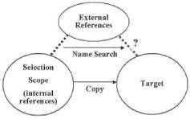
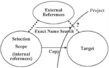

Reusing
information: copying and moving objects
One of the key features of model management is benefiting from existing
information.
Open ModelSphere has an intelligent and useful copy
and paste feature
as well as a move feature to support information reuse.
Move
operations
In model management, it is important to organize metadata information.
The Move
feature provides a flexible and powerful way for structuring models.
This feature
works on a selection of one or more objects.
This feature allows you to restructure models such as data model,
domain model,
common item model, link model, user-defined package, process model,
process, class model, package, class,
operation library and database. Furthermore, it lets you change the
general architecture
of models such as package and class.
The Move feature is an easy one to use. Choose in the main
menu click Edit > Move, or select Move from the pop-up
menu, and choose the final
destination.
However, your choice for the target object must follow certain rules:
- It must be in the same project.
- The composition link must be valid.
- It can not be a descendant of the source object.
Copy
and paste operations
Before using the copy/paste feature you need to take into
account two concepts: the
source object and the target object. The source object can be any
selection of one or
multiple objects; however, they must all be from the same project. The
target object
can also be a selection of one or multiple objects, either in the same
project or in a
different one. Although, if it consists of many components, they must
be compatible.
Internal references
This refers to all the objects inside the selection scope. Thus,
internal references
are always copied.
External references
This refers to the objects outside the selection scope. The selection
will determine
the frontier of the selection and the way in which external references
will be handled.
The target system (whether it is the same or it is a different one is
not relevant to the
operation) and the objects (in the same or different projects) will
have an impact on
the copy of external references. You will get a better understanding
from the following
three scenarios.
Scenario
1
The target object is in the same project as the source object;
regardless whether they
have the same target system or not:
the External References are copied.

Scenario
2
When the target object is in the same project as the source object, but
they have a
different target system:
the External References can not be copied, they have to be recreated.
The application
will do the name search, in the project, for an object of the same type
and the
same target system. If it can find one, it will recreate a reference to
it, if not, the
external link will be lost.

Scenario
3
When the target and source object are in different projects, and the
target system is
not an influencing factor:
the External References always have to be recreated. The application
will do an
exact name search (using the object's complete hierarchical name) in
the target
project for an object of the same type and the same target system. If
it can find one,
it will recreate a reference to it, if not, the external link is lost.
